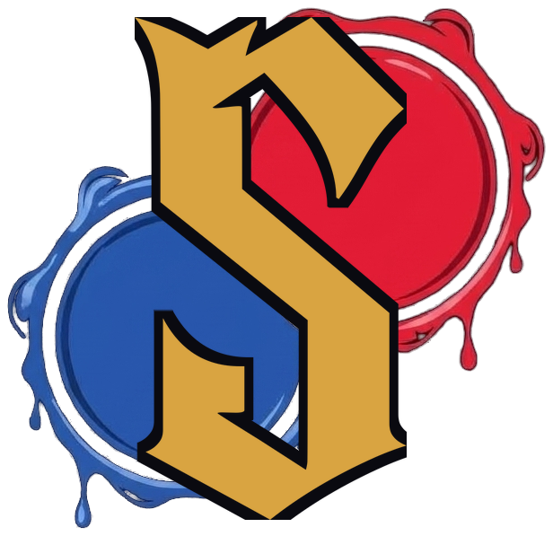
Press kit
Power is not seized. It is negotiated.
Sinete is a two-player duel of negotiation and bluff. Two brothers split a dead king's estate, and the one who ends up with the most land can still lose the crown.
Download everything .zip · 45.9 MBLogos, screenshots, art, video and texts
The king of Poictesme died without naming an heir. His two closest relatives sit across a table with his inventory open between them: 21 deeds to strongholds, harbours, granaries, abbeys, fairs, vineyards and mines. Each kind of land answers to one of 7 nobles, and each noble swears loyalty to the brother who hands over more of it.
Every day each brother plays 4 acts, once each. Some are simple. You keep a deed hidden, or take 2 out of the day. Others put the choice in your brother's hands. You show him 3 deeds, he picks 1 for himself and the other 2 are yours. Show the wrong 3 and you've just paid for his best noble. The oaths of 4 nobles win the match, and so do 11 points of influence. A match takes less than 10 minutes.
Which 4 acts? That's up to Horvendile, the Arbiter. He opens each day by reading one of 8 formulas, never the one from the day before, so the plan you made last night may not survive the morning. Practice mode lets you learn one formula at a time against the computer.
The computer has 4 levels. The strongest, The Sharer, plays out the whole day in its head before every act, and won 64% of 1,280 test matches against Hard. You can also pass the phone across the sofa, or play online on your own schedule. You get a notice when it's your turn, and a conclave key sends a private match to whoever you want to play. Merle, the dead king's fool, teaches the game in a scripted two-day tutorial and will point out a move when you ask, 3 times a day.
No ads and nothing to buy on Android. Made in Brazil, in English and Brazilian Portuguese.
20 seconds of play, no narration. Download: MP4, 1920×1080, 5.3 MB · MP4 vertical, for Shorts and Reels, 1080×1920, 3.4 MB
GIF: The offer (2.1 MB) · Answering an offer (1.2 MB) · End of the day (0.5 MB) · The Arbiter opens the day (0.8 MB) · Merle's advice (0.8 MB)
1920×1080 PNG. Click for the full size.
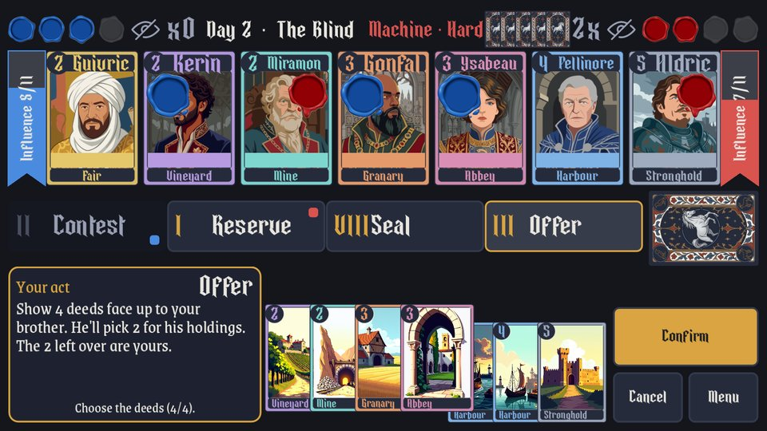
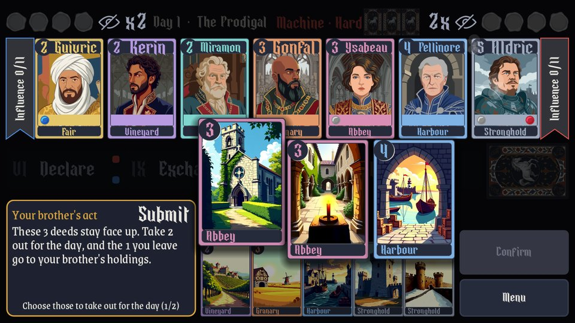
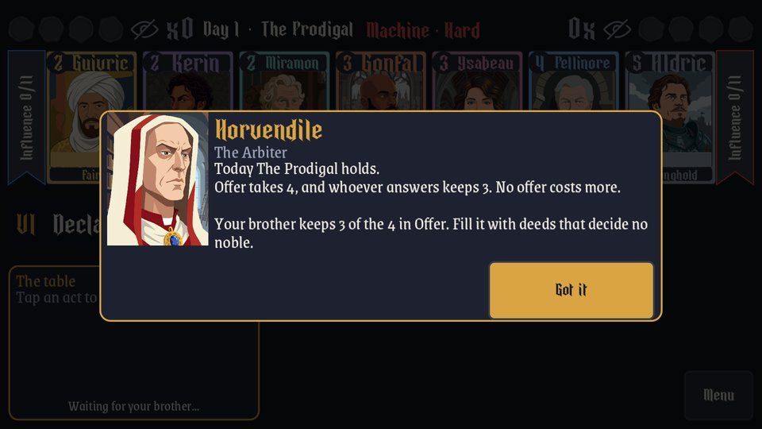
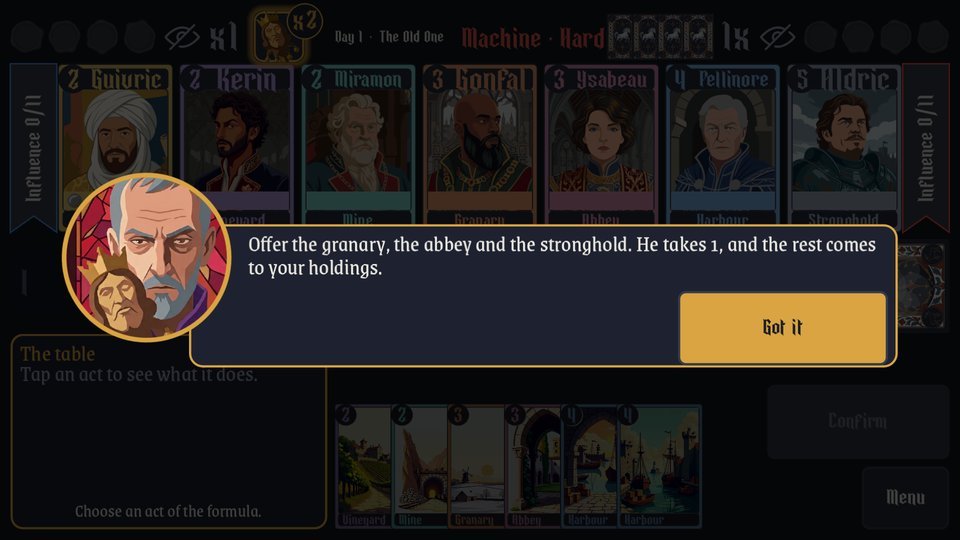
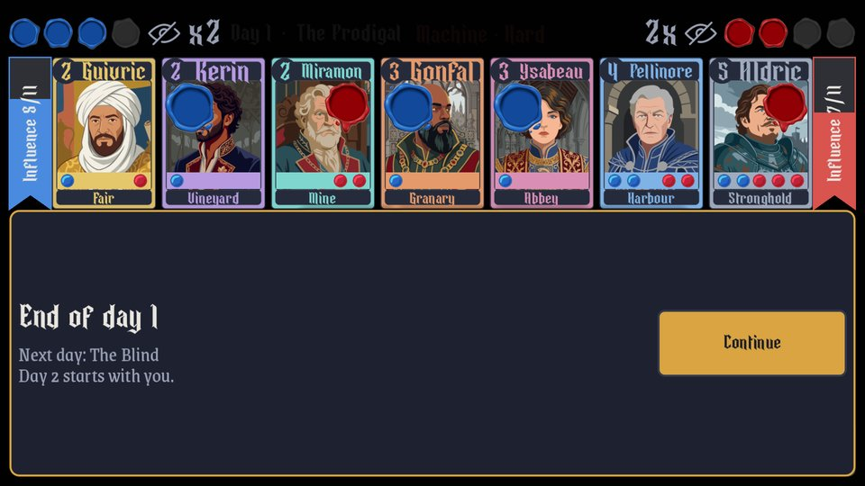
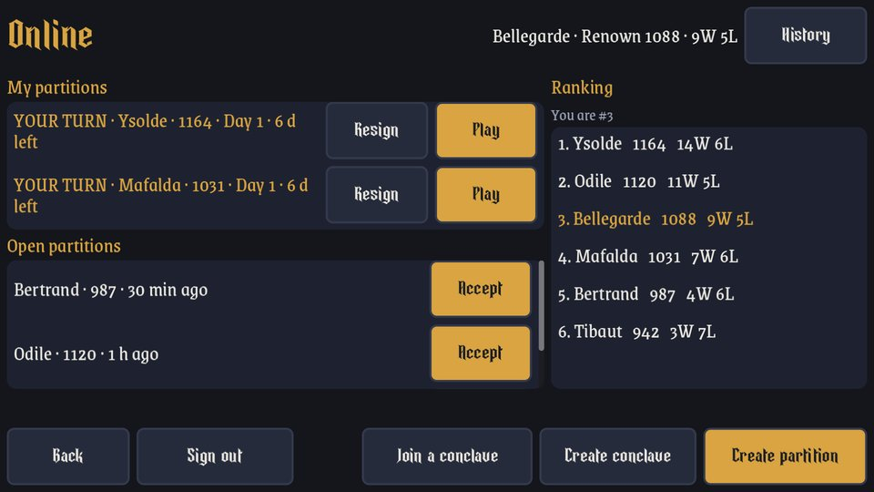
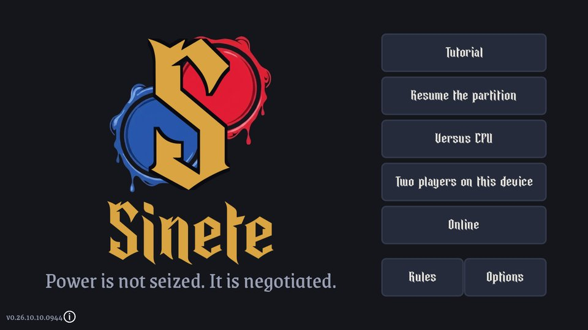
The noble cards are drawn by the game itself. Click for the full size.
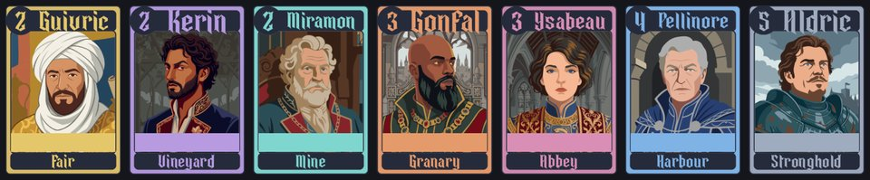
One card at a time, 699×1023: Guivric · Kerin · Miramon · Gonfal · Ysabeau · Pellinore · Aldric
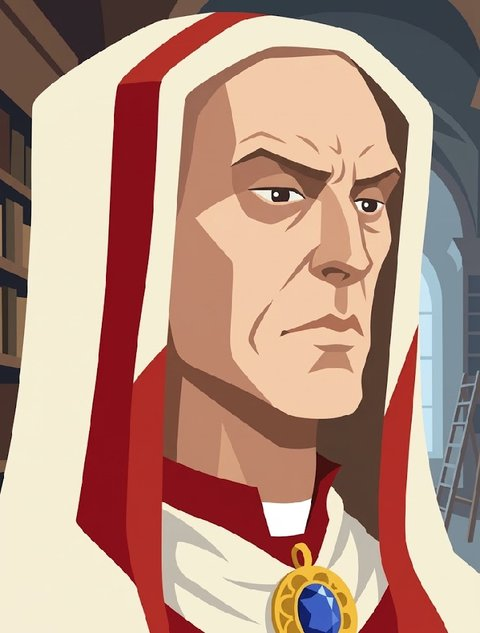
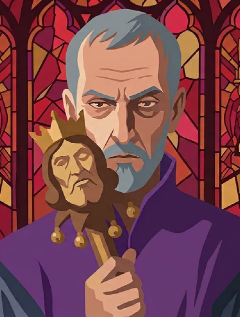
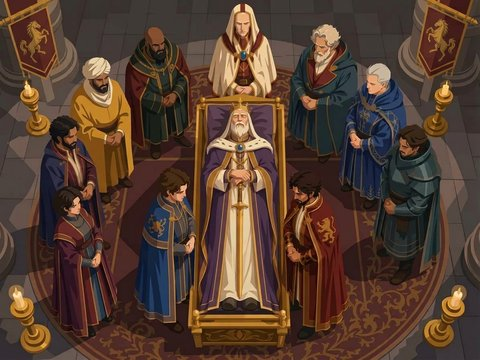
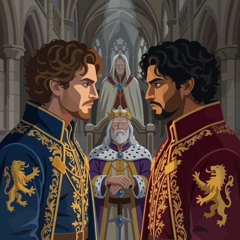
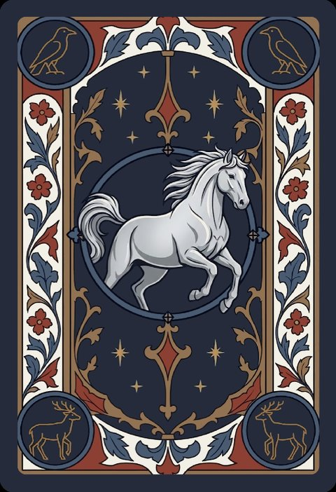
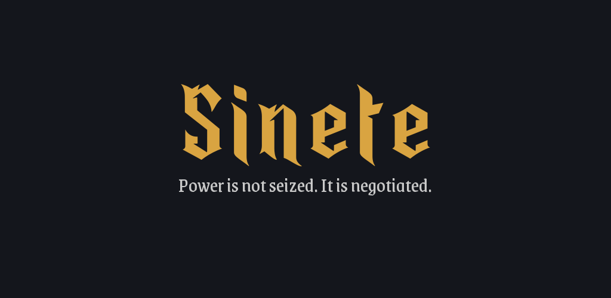
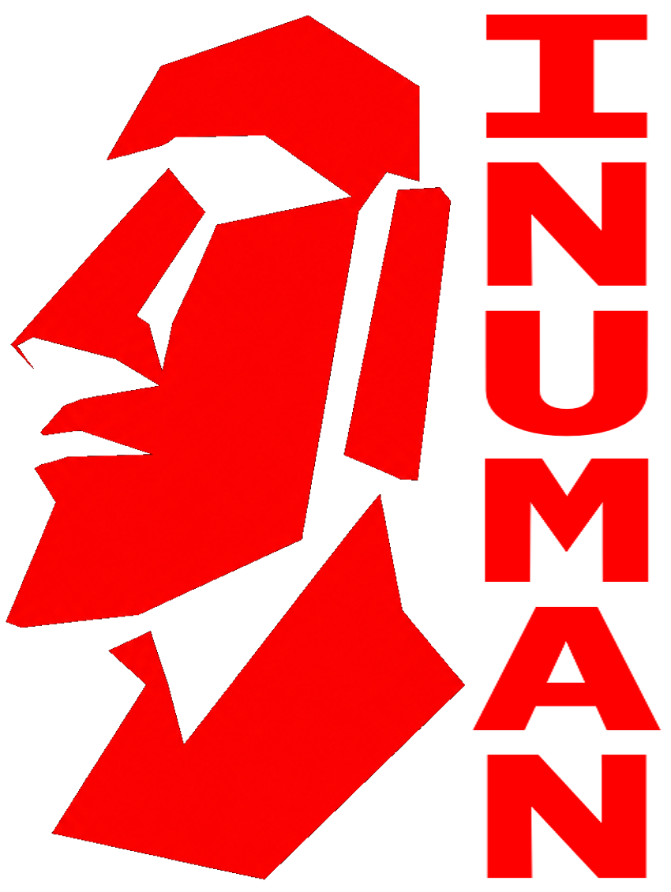
Inuman Games is an independent studio from Brazil.
Press, creators and keys:
support@inuman.com.br
Poictesme, the Fellowship of the Silver Stallion and Horvendile are James Branch Cabell's (1879-1958), a writer from Richmond, Virginia. Poictesme is a province on no map of France, and Cabell spread the line of Dom Manuel, who ruled it, across 18 volumes. The Fellowship comes from The Silver Stallion, of 1926, and Horvendile crosses those books without ageing, impartial by trade. The most read of them, Jurgen, was prosecuted for obscenity in New York in 1920, and the case fell apart two years later. Cabell filled the 1920s and was then forgotten. His work is in the public domain in the United States.
Sinete's mechanics come from Hanamikoji, the board game by Kota Nakayama published by EmperorS4, and from its seven mini-expansions.
The partition of Poictesme is ours, and so are the cards, the writing, the four machine levels, the online play and Classic mode, which draws the Arbiter's formula anew each day.
Sinete is an independent game. It has no connection to Kota Nakayama or EmperorS4, and neither of them endorses it. The Hanamikoji name belongs to its owners.
Press kit
O poder não se toma. Negocia-se.
Sinete é um duelo de negociação e blefe para 2 jogadores. Dois irmãos repartem a herança de um rei morto, e quem fica com mais terras ainda pode perder a coroa.
Baixar tudo .zip · 45.9 MBLogos, capturas, arte, vídeo e textos
O rei de Poictesme morreu sem dizer o nome de um herdeiro. Os dois parentes mais próximos sentam frente a frente com o inventário dele aberto na mesa: 21 escrituras de fortificações, portos, celeiros, abadias, feiras, vinhedos e minas. Cada tipo de terra responde a um dos 7 nobres, e cada nobre jura lealdade ao irmão que lhe entregar mais do que é seu.
A cada dia, cada irmão joga os 4 atos do dia, cada um uma vez. Alguns são simples. Você guarda uma escritura oculta, ou tira 2 do dia. Outros põem a escolha na mão do seu irmão. Você mostra 3 escrituras, ele fica com 1 e as outras 2 são suas. Mostrou as 3 erradas e acabou de pagar pelo melhor nobre dele. Vence quem tiver o juramento de 4 nobres, ou 11 de influência. Uma partida leva menos de 10 minutos.
Quais 4 atos? Quem decide é Horvendile, o Partidor. Ele abre cada dia lendo uma de 8 fórmulas, nunca a do dia anterior, e o plano feito ontem à noite pode não sobreviver à manhã. No modo Treino dá para aprender uma fórmula de cada vez contra a máquina.
A máquina tem 4 níveis. O mais forte, o Partilhador, joga o dia inteiro na cabeça antes de cada ato e venceu o Difícil em 64% de 1.280 partidas de teste. Também dá para passar o celular para quem está do lado no sofá, ou jogar online no seu tempo. Chega um aviso quando é a sua vez, e a chave de um conclave leva uma partilha fechada a quem você quiser chamar. Merle, o bobo do rei morto, ensina o jogo num tutorial roteirizado de 2 dias e aponta uma jogada quando você pede, 3 vezes por dia.
Sem anúncio e sem nada para comprar no Android. Feito no Brasil, em português e inglês.
20 segundos de jogo, sem narração. Baixar: MP4, 1920×1080, 5.3 MB · MP4 vertical, para Shorts e Reels, 1080×1920, 3.4 MB
GIF: A oferta (2.1 MB) · Respondendo à oferta (1.1 MB) · Fim do dia (0.5 MB) · O Partidor abre o dia (0.8 MB) · O conselho de Merle (0.8 MB)
PNG em 1920×1080. Clique para o tamanho original.
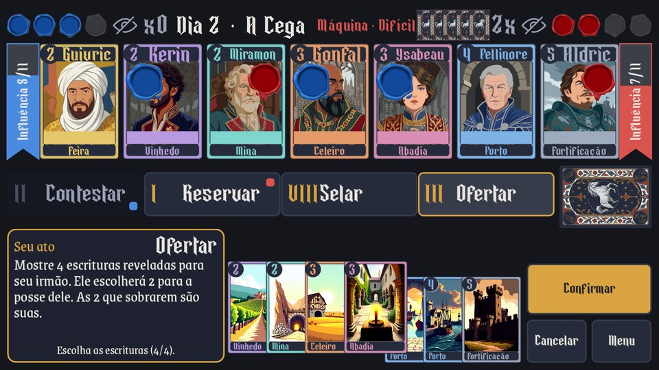
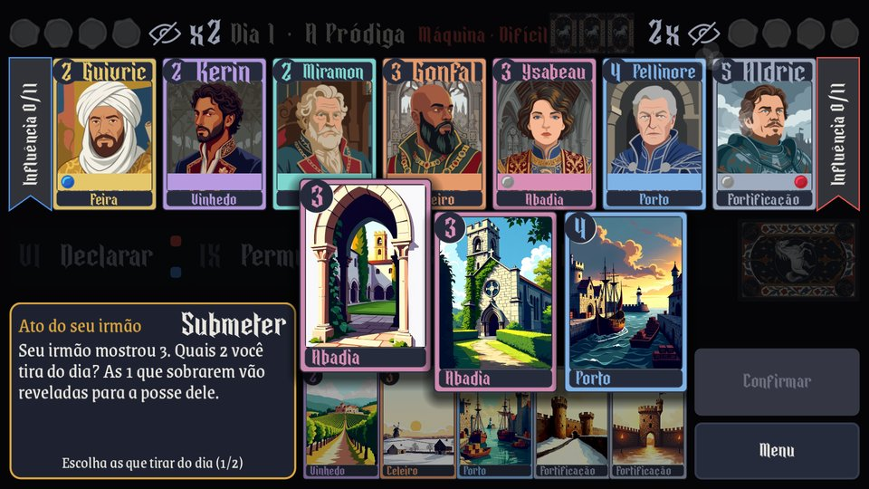
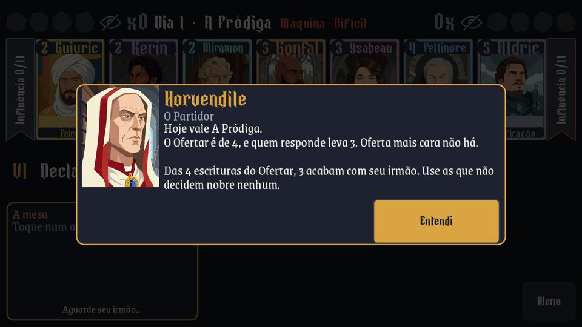
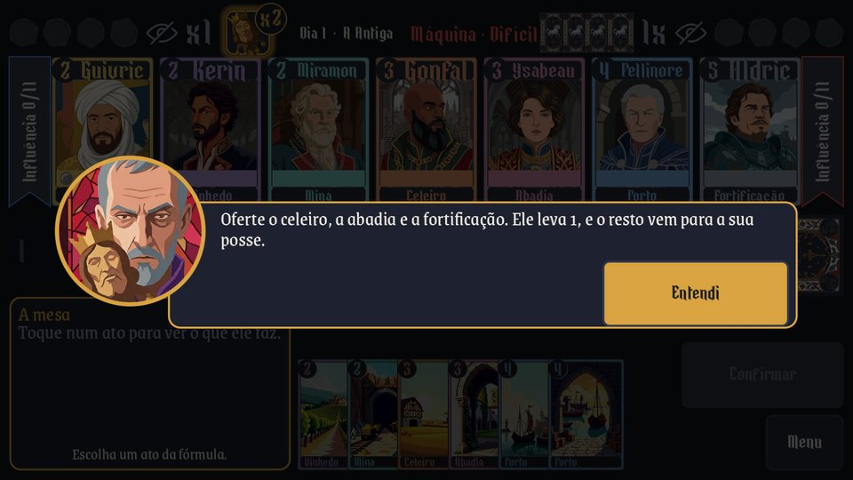
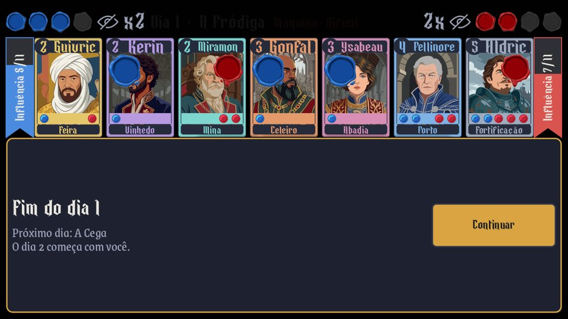
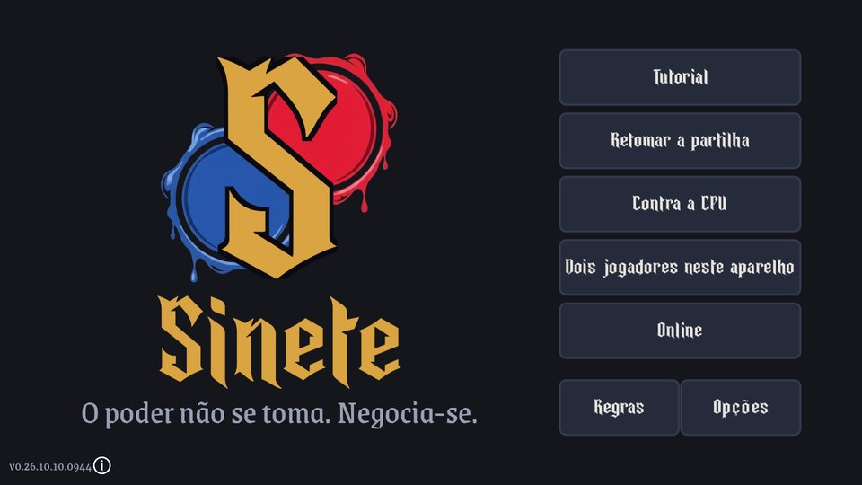
Os cartões dos nobres saem do próprio jogo. Clique para o tamanho original.
A Inuman Games é um estúdio independente do Brasil.
Imprensa, criadores e chaves:
support@inuman.com.br
Poictesme, a Irmandade do Garanhão de Prata e Horvendile são de James Branch Cabell (1879-1958), escritor de Richmond, na Virgínia. Poictesme é uma província que não está em mapa nenhum da França, e Cabell espalhou por 18 volumes a linhagem de Dom Manuel, que a governou. A Irmandade sai de The Silver Stallion, de 1926, e Horvendile atravessa esses livros sem envelhecer, imparcial por ofício. O mais lido deles, Jurgen, foi processado por obscenidade em Nova York em 1920, e o caso caiu dois anos depois. Cabell encheu os anos 1920 e depois foi esquecido. A obra dele está em domínio público nos Estados Unidos.
A mecânica do Sinete vem de Hanamikoji, jogo de tabuleiro de Kota Nakayama, publicado pela EmperorS4, e das sete mini-expansões dele.
A partilha de Poictesme é nossa, e também as cartas, os textos, os quatro níveis de máquina, o online e o Modo clássico, que sorteia a fórmula do Partidor a cada dia.
Sinete é jogo independente. Não tem vínculo com Kota Nakayama nem com a EmperorS4, e nenhum dos dois o endossa. O nome Hanamikoji pertence a seus donos.